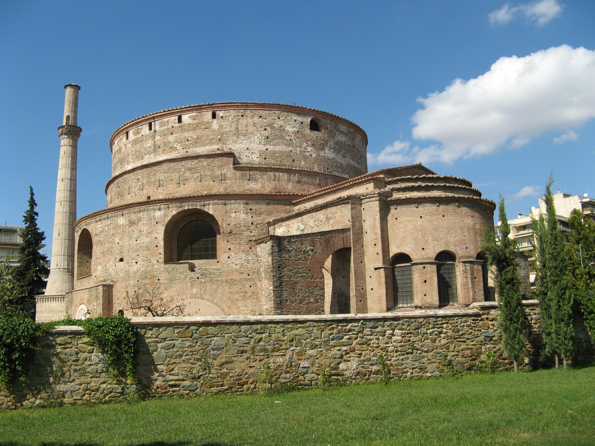

Η Ροτόντα ανήκει στα περίκεντρα οικοδομήματα, στο κυκλικό της σχήμα άλλωστε οφείλει και την ονομασία της. Κτίστηκε στα χρόνια του καίσαρα Γαλερίου, γύρω στα 306 μ.Χ., ως ναός του Δία ή του Κάβειρου ή κατ΄ άλλους ως Μαυσωλείο του ιδίου. Στον άξονά της κατέληγε πομπική οδός που συνέδεε τη θριαμβική αψίδα του Γαλερίου με το ανακτορικό συγκρότημα, που έχει ανασκαφεί νοτίως της Εγνατίας οδού.